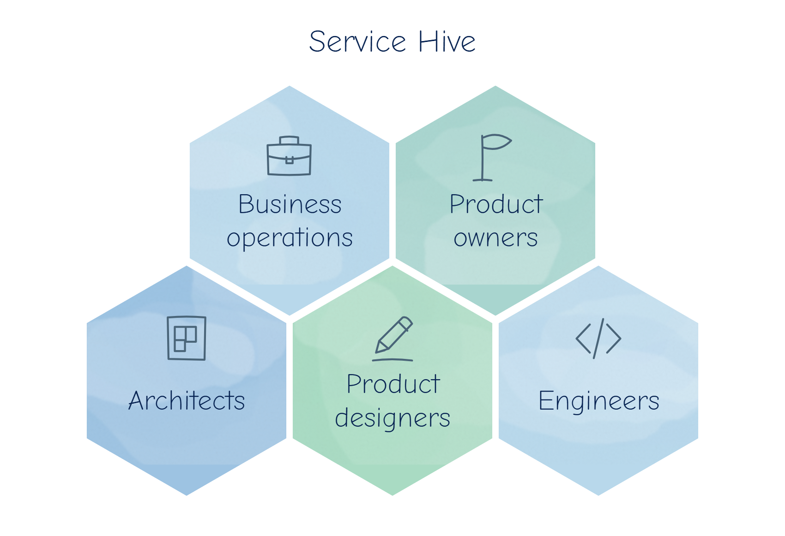

Service Hive: cardholder servicing built for global scale.
Senior Product Manager · 2021–2023
FintechService designAPIsOperations
Reward Insights
80%
reduction in customer queries
£150K+
internal cost savings per year, per bank partnership
30–40%of queries passed between departments (before)
87%of missing-cashback claims traced to common root causes
18M+potential cardholders from new API banks
Newrevenue stream
From fragmented support to global servicing.
Executive summary
We currently provide first and second line cardholder support through multiple channels, with multiple tools, and bank-specific processes. This is resource-intensive, inefficient, not easily scalable, and creates an environment where consistently meeting and monitoring SLAs is a challenge.
Our vision is to create a centralised, API-driven, cross-product servicing solution where all third line support is managed in a single tool, as part of a service oriented design, with efficiencies being driven by standardised processes, tooling and workflows.
The first phase of the roadmap will deliver a high impact, highly automated solution for the investigation and resolution of Missing Transaction Claims submitted by GMM cardholders. This will bridge the most urgent gap in our servicing capabilities.
Subsequent phases will build out the remaining servicing journeys, to be implemented with standard API integrations, for new and existing banks.
Current situation
Every quarter, thousands of queries and missing-transaction claims, 30–40% of them passed between departments, and weeks of operations effort spent on handling and reporting.
Disjointed Communication Channels. Currently, our servicing portal is not centralized. Having multiple publisher portals is not sustainable for future.
Manual Workflows. Interdepartmental workflow is currently manual. There is no task assignment or note taking capability, resulting in query management via emails.
Multiple Support Case Management Tools. Excel spreadsheets and JIRA are used to manage the queries.
Inefficient Reporting. We lack a consistent reporting solution, and we compile reports from multiple sources and departments, including Tech, Finance, and Marketing.
Customer query categories are not defined. Categories are not same across the publishers. Some categories can refer to multiple meanings. No consistent definitions in the system. Impacts clarity of reporting across stakeholder groups.
Root cause of 87% of missing cashback claims: third party transactions (39%), in-store transactions made for an online offer, online transactions made for an in-store offer, offer expired, ineligible card, no offer.
New API-based rollouts would add millions of cardholders, with query volumes possibly 2–4× today’s.
Product vision
“To build a world-class & scalable, service experience that leverages cutting-edge technology, data analytics, and human expertise to provide anticipatory support, creating unparalleled query resolution via our platform.”
At the heart of the servicing Hive is a community consisting of Business operations, product owners, architects, product designers and engineers. Hive will foster the culture of innovation through delivering state of the art solutions. Scaling at the global level will require great efficiencies, both in terms of technology and processes. The success of Hive will be measured against the realized efficiencies.

Key decisions
Central solution vs multiple portals: one central solution.
Custom OR custom + other: need simple workflow, need assignment capability, need reporting capability.
Phased roadmap
A. Gateway APIs: bring queries / send results to bank.
B. Enabler APIs & backend APIs: enabler APIs for in-app journeys; potentially usable for chatbots & IVR. Backend APIs allow pushing and pulling results to/from multiple products.
C. Service Hive: internal query management & reporting.
The first release: the Missing Cashback Claim Validation Wizard, a point solution that consists of 2 elements: the service APIs and the UI.
System is able to scale to support 20,000 queries per month for first two years and 50,000 queries in next 5 years.
Smart resolutions
Innovated “Smart resolutions” for cashback-related queries, automating disqualification reasons, leading to an 80% reduction in customer queries and exceptional user experience on mobile applications.
When a bank requests transaction details and Reward provides the details of the transaction along with the offer and cashback, where cashback is not earned, Reward also provides the reason why cashback wasn’t earned. When no subsequent cashback-related query is raised, this is considered a smart resolution.
Results
Transformed the servicing capability through innovating an internal service management target operating model.
The new operating model was underpinned by a servicing system fully integrated with the internal content management system (CMS) and external banks via APIs.
New operating model enabled efficient customer query management, delivering internal cost savings of over £150K per year per bank partnership, and enabled an additional revenue stream.
Smart resolutions: 80% reduction in customer queries.
What I learned
Building and deploying the product was less difficult than building an internal servicing capability (Service Hive) within Reward.